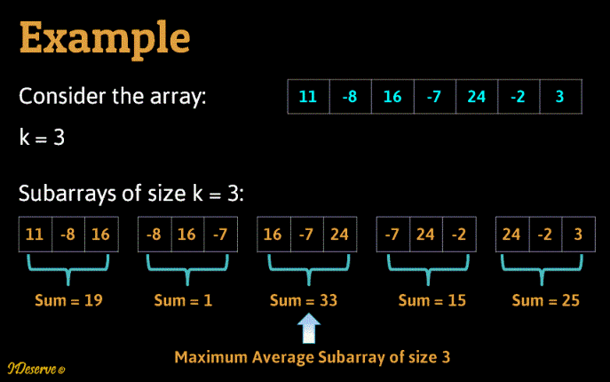

Các khái niệm cơ bản
1. Ví dụ mở đầu
Bài toán tìm dãy con lớn nhất. Cho dãy số:
a1, a2, ... , an
Dãy số: ai, ai+1, ..., aj với 1 ≤ i ≤ j ≤ n được gọi là dãy con của dãy đã cho và tổng của dãy con đó được gọi là trọng lượng của dãy con này.
Ví dụ: Hãy tìm trọng lượng lớn nhất của dãy con -2, 11, -4, 13, -5, -2
Câu trả lời cần đưa ra là dãy con 11, -3, 13
1.1 Thuật toán trực tiếp
Thuật toán đơn giản đầu tiên có thể nghĩ ra để giải bài toán đặt ra là: duyệt tất cả các dãy con có thể.
ai, ai+1, ..., aj với 1 ≤ i ≤ j ≤ n
và tìm tổng của mỗi dãy con để tìm ra trọng lượng lớn nhất.
Thuật toán này có thể cài đặt trong đoạn chương trình sau:
int maxSum = 0;
for (int i = 0; i < n; i++)
{
for (int j = i; j < n; j++){
int sum = 0;
for (int k = i; k <= j; k++)
sum += a[k];
if (sum > maxSum)
maxSum = sum;
}
};
1.2 Thuật toán nhanh hơn
Để ý rằng tổng các số hạng từ i đến j có thể thu được từ tổng của cá số hạng từ i đến j-1. Ta có thể giảm được một vòng for trong cùng.
Ta có thể cài đặt như sau:
int maxSum = a[0];
for (int i = 0; i < n; i++)
{
int sum = 0;
for (int j = i; j < n; j++){
sum += a[j];
if (sum > maxSum)
maxSum = sum;
}
};
1.3 Thuật toán đệ quy
1.4 Thuật toán quy hoạch động
int smax = a[0]; //Trọng lượng của dãy con lớn nhất
int maxendhere = a[0];
int imax = 1; //Vị trí kết thúc của dãy con lớn nhất
int u, v;
for (int i = 1; i < n; i++){
u = maxendhere + a[i];
v = a[i];
if (u > v)
maxendhere = u;
else
maxendhere = v;
if (maxendhere > smax){
smax = maxendhere;
imax = i;
}
}
So sánh các thuật toán
| Số phép toán | n = 10 | Thời gian | n = 100 | Thời gian |
|---|---|---|---|---|
| log(n) | 3.32 | 3.3 * 10-8 giây | 6.64 | 6 * 10-8 giây |
| nlog(n) | 33.2 | 3.3 * 10-7 giây | 664 | 6.6 * 10-6 giây |
| n2 | 100 | 10-6 giây | 10000 | 10-4 |
| n3 | 1 * 103 | 10-5 giây | 1 * 106 | 10-2 |
| en | 2.2 * 104 | 2 * 10-4 giây | 2.69 * 1043 | >1026 thế kỉ |
| Số phép toán | n = 10000 | Thời gian | n = 106 | Thời gian |
|---|---|---|---|---|
| log(n) | 13.3 | 10-6 giây | 19.9 | <10-5 giây |
| nlog(n) | 13.3 * 105 | 10-3 giây | 19.9 * 107 | 2 * 10-1 giây |
| n2 | 1 * 108 | 1 giây | 1 * 1012 | 2.77 giờ |
| n3 | 1 * 1012 | 2.7 giờ | 1 * 1015 | 115 ngày |
| en | 8.81 * 104342 | >104327 thế kỉ |
2. Độ phức tạp của thuật toán
2.1 Khái niệm bài toán và thuật toán
Định nghĩa: Bài toán tính toán F là ánh xạ từ tập các xâu nhị phân độ dài hữu hạn vào tập các xâu nhị phân có độ dài hữu hạn:
F: {0, 1}* -> {0, 1}*
Ví dụ:
- Mỗi số nguyên x đề có thể biểu diễn dưới dạng xâu nhị phân là các viết trong hệ đếm nhị phân của nó.
- Hệ phương trình tuyến tính Ax = B có thể biểu diễn dưới dạnh xâu là ghép nối của các xâu biểu diễn nhị phân của các thành phần của ma trận A và vector b
- Đa thức một biến P(x) = a0 + a1x + ... + anxn hoàn toàn có thể xác định bởi dãy số n, a0, a1, an, mà để biểu diễn dãy số này chúng ta có thể sử dụng xâu nhị phân.
Định nghĩa: Ta hiểu thuật toán giải bài toán đặt ra là một thủ tục xác định bao gồm một dãy hữu hạn các bước cần thực hiện để thu được dầu ra cho cho một đầu vào cho trước của bài toán.
Thuật toán có đặc trưng sau đây:
- Đầu vào (Input): Thuật toán nhận dữ liệu vào từ một tập nào đó.
- Đầu ra (Output): Với mỗi một tập các dữ liệu đầu vào, thuật toán đưa ra các dữ liệu tương ứng với lời giải bài toán.
- Chính xác (Precision): Các bước của thuật toán được mô tả chính xác.
- Hữu hạn (Finiteness): Thuật toán cần phải đưa được đầu ra sau một số hữu hạn (có thể rất lớn) bước với mọi đầu vào.
- Đơn trị (Uniqueness): Các kết quả trung gian của từng bước thực hiện thuật toán được xác định một các đươn trị và chỉ phụ thuộc vào dầu vào cũng như các kết quả cho trước.
- Tổng quát (Generality): Thuật toán có thể áp dụng để giải mọi bài toán có dạng đã cho.
2.2 Độ phức tạp của thuật toán
Đánh giá độ phức tạp của thuật toán là đánh giá lượng tài nguyên các loại mà thuật toán đòi hỏi sử dụng. Có hai loại tài nguyên quan trọng là thời gian và bộ nhớ. Trong giáo trình này ta đặc biệt quan tâm đến việc đánh giá thời gian cần thiết để thực hiện một thuật toán mà sẽ gọi là thời gian tính của thuật toán.
Rõ ràng thời gian tính phụ thuộc vào dữ liệu đầu vào.
Định nghĩa: Ta gọi kích thước dữ liệu đầu vào (hay độ dài dữ liệu đầu vào) là số bit cần thiết để biểu diễn nó
Ta sẽ tìm cách đánh giá thời gian tính của thuật toán bởi một hàm của độ dài của dữ liệu vào
Phép toán cơ bản: Đo thời gian bằng đơn vị đo nào?
Định nghĩa: Ta gọi phép toán cơ bản là phép toán có thể thực hiện với thời gian bị chặn bởi một hằng số không phụ thuộc vào kích thước dữ liệu.
Để tính toán thời gian tính của thuật toán để ta đếm số phép toán cơ bản mà nó phải thực hiện
2.3 Các loại thời gian tính
Chúng ta sẽ quan tâm đến:
- Thời gian tối thiểu cần thiết để thực hiện thuật toán với mọi bộ dữ liệu đầu vào kích thước n. Thời gian như vậy sẽ được gọi là thời gian tính tốt nhất của thuật toán với đầu vào kích thước n.
- Thời gian nhiều nhất cần thiết để thực hiện thuật toán với mọi bộ dữ liệu đầu vào kích thước n. Thời gian như vậy sẽ được gọi là thời gian tính tồi nhất của thuật toán với đầu vào kích thước n.
- Thời gian trung bình cần thiết để thực hiện thuật toán trên tập hữu hạn các đầu vào kích thước n. Thời gian như vậy sẽ được gọi là thời gian tính trung bình của thuật toán với đầu vào kích thước n.